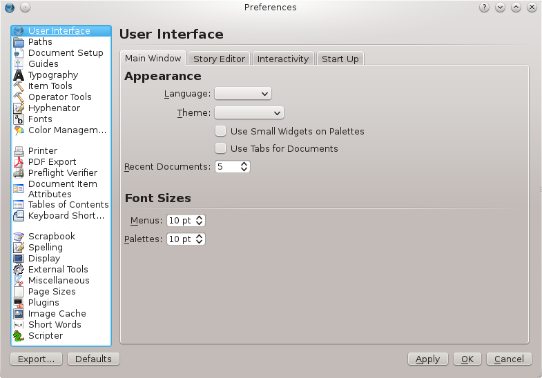
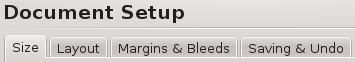
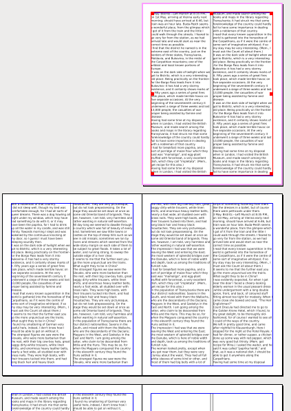
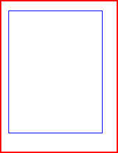
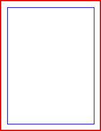
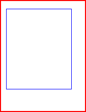
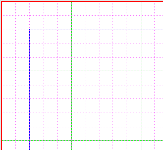
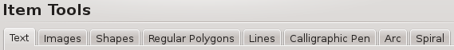
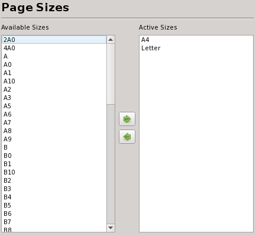
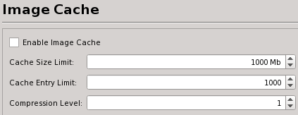

Document Settings and Preferences
Under the File heading on the menu bar, you will find two related entries, Document Setup and Preferences. Each of these brings up a dialog used for changing various default settings and other behavior in Scribus:
- Document Setup will refer to the document being edited, and changes made for that document will be saved with the document and apply when it is re-opened. If you have no document open, you cannot select this dialog.
- Preferences in general changes settings for any future documents. It will be available whether or not you have any documents open. The following descriptions will primarily apply to Preferences, but we will point out differences compared with Document Setup as we go.
For Scribus versions 1.5+, Preferences has a new look, mostly a redistribution of the same settings there were in previous versions.

User Interface (not present in Document Setup)
- Main Window
- Language: – here is the system default language (the choice with no name is American English).
- Theme: your choices here depend on what is available on your sytem. Use Small Widgets can make some dialogs more compact.
- Recent Documents: determines the maximum number of files listed under File > Open Recent.
- Font Sizes: for menus and palettes may also affect the size of various dialogs by enlarging/shrinking the space needed for fonts.
- Story Editor
- Here we can change the display font, color, and set Smart Text function. If you set these inside Story Editor from Settings you will override this and also reset the Preferences settings.
- Interactivity
- Here are some settings affecting your mouse interactions with the canvas.
- Start Up
- If you wish, you can choose not to have a splash screen or the initial dialog that appears when Scribus starts.
Paths
The various “paths” are the default locations Scribus will use. The path for scripts is where Scribus looks when you choose Scripts > Execute Script from the menu bar.
Document Setup

In Preferences, the various settings here will be those that you see when you create a new document (File > New). In the Document Setup, they will change the current document.
- Size
- Page Size section should be easily understandable. You may be surprised to see only choices for A4, Letter, and Custom when you first use Scribus. This is because there is a separate category Page Sizes, where you can add to these 3 default choices. with a large selection of standard sizes to choose from, in addition to Custom.
- Orientation, either Portrait or Landscape
- Units refers to the page dimension units: Points, Millimeters, Inches, Picas, Centimeters, or Cicero.
- Width and Height will have preset values for Page Size standards. If you change either setting, the size automatically switches to Custon.
- Layout
- Page Layout choices have been the source of confusion for some. These simply apply to the relative placement of pages on your screen, and each will have the size as indicated, not some subdivision of it. Choices are Single Page, Double Page, 3-Fold, and 4-Fold. Double Page would typically be chosen for a book-like layout, and thus the First Page selector at the bottom allows the initial page to be Right Page or Left Page. This helps you use the appropriate Master Page layout. 3-Fold displays will then have Left Page, Middle, and Right Page choices. Not surprisingly, 4-Fold will have the choices Left Page, Middle Left, Middle Right, and Right Page.
|  | Here is an example of Double Page display, Right Page as the first (also happens to be two-column text frames). If you print these on a local printer, they will print as individual pages, and this is also true for 3-Fold and 4-Fold local printer printing. |
- Margins and Bleeds
- Preset Layouts will be available for anything other than Single Page layout. What these represent are some time-honored ways to set the margins of the page, many based on some mathematical approach related to the dimensions of the page. Below we see the contrast of these various methods – these are all right pages of a double-sided layout.
|  Gutenberg |  Magazine |  Fibonacci |  Golden Mean |  Nine Parts |
- If you choose None for the preset, then you can manually set each margin. If you check Link then all margin values are the same and change together. Note that except for Single Page display, there are Inside and Outside margins instead of Left and Right, so they are placed differently for left and right pages. Clicking the Printer Margins button allows you to set margins according to your local printer. The dialog shows the minimum margins for you printer, which you might just use as a reference.
- Using Bleeds requires an understanding of how they are used. The bleed space is designed to be trimmed off after printing, and allows for whatever is printed to come to the absolute edge of the paper. A typical bleed amount might be 1/8 inch (9 points) in the US, or 3 mm in Europe. If you begin with a standard paper size such as A4, the bleed width is added to the dimensions of that paper.
- Saving & Undo
- Save in Compressed Format will gzip your Scribus documents, so that filenames end with .sla.gz – this is an automatic process which requires no knowledge of how this is done on your part.
- Autosave can be turned off/on, and the interval between automatic saving can be set.
- Under Undo/Redo, you can enable or disable this system, and you can specify how many operations for Scribus to remember for undoing.
Guides
- Placement
Although labeled Guides, there are many other settings here, mostly related. Guides can either show above or below your content. You can now have a fine adjustment of the relative placement of Guides, Grid, Baseline Grid, and Margins with respect to your page content. Snap Distance applies when Page > Snap to Guides or Page > Snap to Grid has been selected. Grab Radius has to do with the size of the virtual space for grabbing and dragging a frame’s handles. As the tooltips indicate, you must shut down and restart Scribus for these to take effect when they are changed.
- Distances sets up the spacing between major and minor Grid lines, and also for the Baseline Grid which is the set of horizontal guides to which text can be aligned. This is shown further in Working with Text. The Baseline Grid Offset is the distance from the top of the page to the first line of the Baseline Grid.
- Visibility
| By default, Guides and Margins will show, but can be changed here. Major and Minor Grids do not show by default.
Here we have changed the default colors so you can easily see the difference in the screenshot to the right, with page edges shown in red, margins in blue, major grid light green, and minor grid in light magenta. A new setting is that instead of the grid consisting of lines as you see here, there can be crosses to mark the major grid intersections and dots for the lines. |
 |
- Colors – this is where you change the default colors of all these elements.
Typography
Here are the default settings for various typographic features.
|
Some typographic terms
To the left, we are showing the baseline in gray, x-height or midline in green, ascender height in magenta, and descender height in blue. The terms ‘x-height’ and ‘descender height’ refer to the distance from the baseline, ‘ascender height’ refers to the distance from the x-height. For clarity, the caps height was not marked, but this would be the top of the ‘T’. |
- For Subscript and Superscript, settings are similar, with Displacement referring to the distance downward or upward, respectively, from the baseline, as a percentage of font size. Scaling is the size as a percentage of the font size.
- For Underline and Strikeout the Displacement will be relative to the baseline, and a percentage of the height of the descender or ascender respectively.
- The setting for Small Caps will refer to the creation of small caps by Scribus based on the font. Some fonts may include glyphs for small caps, which should be used if available.
- In addition, the amount of Automatic Linespacing can be adjusted relative to the size of the font. A setting of 100% here will make the linespacing about 116% of the size of the font – for example, a 12-point font would have linespacing of about 14 points.
Item Tools
In the Tools tab you can change the default settings for the various objects you create.

- Text – Fill Color and Shading, Line Color and Shading (Fill Color and Line Color refer to the frame), Tab Fill Character, default Tab Width, number of Columns in a frame, Column Gap width, distances of text from the edges of the frame: Top, Left, Bottom, and Right. You also choose the default Font, its Size, its Color and Shading, its Stroke and Shading. Stroke refers to the outline of the glyph and Color is the fill. There is also a Preview at the bottom of the tab to see your changes as you make them.
- Images – Fill Color and Shading, Line Color and Shading, a check to Use an Embedded Clipping Path. You can choose Free Scaling for imported images and the default Scaling. Alternatively you might choose to Scale Image to Frame Size, and perhaps to Keep Aspect Ratio. Lastly, you choose the default screen resolution of images, which only applies to the display in Scribus, not the resolution in an exported PDF.
- Shapes – Fill Color and Shading, Line Color and Shading, Line Style, and Line Width.
- Regular Polygons – Polygons will inherit the fill and line settings from Shapes. Here you set the number of Corners and Rotational position of the figure. Inner Rotation is only active when you check Apply Factor. The Factor setting determines whether the sides of the polygon bow inward or outward, and Inner Curvature and Outer Curvature causes and inward or outward bowing of the line segments between corners. Since there is a preview window, you can see the effect of various changes.
- Line – Line Color and Shading, Line Style, Width, and the type of Start Arrow and End Arrow, if any.
- Calligraphic Pen – Fill Color and Shading, Line Color and Shading. Line here might also be called the ‘Stroke’ or borders of the calligraphic line. Line Style and Pen Angle can also be set, and Line Width and Pen Width. Pen Width here is the fill of the calligraphic line, between the strokes.
- Arc – Start Angle and End Angle. A preview shows your settings graphically.
- Spiral – Start Angle (outer end of the spiral), End Angle (inner end of the spiral). Factor determines how sharply it spirals inward. Again, there is a preview window.
Operator Tools
- Zoom – here you set the limits for document zoom, with the absolute Minimum and Maximum being 1% and 3200% respectively. You also set the percentage of change as you click the ‘-’ and ‘+’ icons for zooming.
- Miscellaneous – when you do a simple duplication of an object (Item > Duplicate), here are settings for the amount of X and Y shift of the copy. The Constrain To setting for Rotation would apply when you rotate with the mouse while holding down Ctrl-Shift, and also when you make a line segment while holding down Ctrl-Shift. So you would see the position jump from 0° to 15° to 30°, and so on.
Hyphenator/Hyphenation
Hyphenation details are described here: Hyphenation in Scribus.
Fonts
Selecting and installing fonts correctly is one of the most important configuration items with Scribus, and an extensive set of notes is here: Fonts and Scribus. If there is one part of the documentation you really must read, it is this one.
Color Management
There are detailed notes on this topic in the Color Management section.
Note: You will not be able to export to PDF/X-3 if color management is not enabled, and the Preferences settings for this format will likewise not be available. You can only set the Monitor Profile if no document is open.
Printer/Printing
The settings here of course apply to printing from your local printer attached to your computer, or perhaps printing to a file instead, which creates a PostScript file of your document. Thus, many of these are the same as you see in the printing dialog. So we can set our defaults in Preferences.
PDF Export
Remember that the settings here simply change the default values for PDF Export. You can still override any settings with the PDF Export dialog. For more info on PDF look at PDF Export Options and PDF/X-3 and Scribus.
- Pages – choose the Export Range for all pages, or according to your selection. You can also rotate the page 90°, 180°, or 270°, as well as mirror horizontally and vertically.
- File Options – starts with your default choice for PDF type or Compatibility: PDF 1.3, PDF 1.4, PDF 1.5, PDF/X-1a, PDF/X-3, or PDF/X-4. You may check the following options: Clip to Printer Margins, Generate Thumbnails, Save Linked Text Frames as Articles (potentially useful when navigating in the PDF), Include Layers (only an option for PDF 1.5 and PDF/X-4), Include Bookmarks, and Embed PDF and EPS Files (Experimental).
There are Compression settings, mainly useful for images, to limit image resolution in the PDF in order to reduce the size of the PDF file. There is a wiki article which may give you some help with these settings.
- Security – here you can choose to encrypt your PDF, then create passwords for Owner and User. You can then choose which kinds of access you might forbid or allow, such as printing, copying, editing, or adding any annotations. If you have chosen any of the PDF/X types for output, you will not have the Security feature as an option.
- Color – If you are going to have your PDF commercially printed, you will likely want to discuss appropriate settings for this tab. Output Intended For: should be set for Printer if you are having this commercially printed. For an online document or if you will print on the printer attached to your computer, choose Screen/Web, You can also choose Grayscale if appropriate. You may choose ICC profiles in this tab, except when you have chosen one of the PDF/X types. Custom Rendering should only be set when you are instructed to by your printer, and with the settings recommended.
- Pre-Press – in this tab you can choose to create Crop Marks, Bleed Marks, Color Bars, Registration, and Page Informtion, which are all separate from having bleed on the page. Also note that you can make Bleed Settings here, as well as on the Document. If you have set these for the Document, then you may safely leave these at 0, since you have the option when exporting to use the Document bleed settings. The difference between the two is that if bleed is set here but not on the Document, you will not see the bleed space as you work in Scribus, and it will be added at export.
If you have chosen one of the PDF/X types for output, you will be able to edit the InfoString.
Preflight Verifier
See the information about Printing Tools to learn more about the configuration options in this panel.
Document Item Attributes
Aside from storing additional information about a given item, this feature is currently most useful in connection with the creation of a table of contents.
Table of Contents
A use of the settings is explained here: http://wiki.scribus.net/index.php/Creating_a_Table_of_Contents
Keyboard Shortcuts
Here you see the various default keyboard shortcuts, which are editable, and many others can be assigned. Moreover, once customized, you can export them into a separate XML file that can be exported and saved separately, along with making it portable to other machines. The default file suffix is .ksxml. This is a Unicode file and should not have issues being transported across platforms, with the only caveat that Macs have an option and command meta key, where Linux, UNIX, OS/2, eComStation and Windows share common keyboards.
Scrapbook
With Scrapbooks, you can right button drag and drop frequently used items, including pictures, images and text files for quick placement. Scrapbooks can be saved with a file or independently of a document, as a separate Scrapbook which can be loaded use with many different Documents. Separate Scrapbooks are kept with a .scs designation. This panel sets the defaults for the thumbnail preview size of items in the Scrapbook palette and whether Scrapbooks should be saved automatically when changed.
Spelling
Manage your available spelling dictionaries here.

Display (not all of these are available in Document Settings)
Most of these are pretty straightforward. Depending on the size of your screen, you can use this to adjust the scale of and rearrange your workspace. If you have plenty of space, you may want to adjust the display to accurately reflect your document size by default. Remember, you can adjust the magnification settings in Operator Tools > Zoom. You can only adjust Display Scaling in Preferences and with no document open.
The Colors tab allows for customization of the colors used for various screen features, such as the scratch space, border of an active page, and frames in their various states of selected, grouped, linked, and so on. In Document Settings only Fill Color is available. It’s also worth mentioning here that the Fill Color only has to do with the appearance of the document background and is not printed or exported to PDF.
External Tools
This panel enables you to change the default settings for the location of Ghostscript and other external programs. If you have installed Ghostscript before installing Scribus, it is usually detected automatically. If you receive an error message indicating that EPS files cannot be used, this is where the settings can be changed to allow Scribus to find the correct location of Ghostscript.
Linux, UNIX, OS/2, eComStation and Windows:
This particular screenshot comes from Linux and is also applicable to other UNIX systems. See the Windows, OS/2 and eComStation specific information for these operating systems. Some additional information about Ghostscript can be found in Advanced Ghostscript.
Mac OS X
Above are the recommended settings, provided you have correctly installed the Ghostscript framework.
Other External Tools
Image Processing Tool
You are not restricted to using GIMP for image editing, and could use any available image editor such as Krita, or even Photoshop. However, GIMP is set as the default application, as it’s the most popular Open Source image editing software.
Web Browser
Here you can set the path to the executable file of the browser that will be used if you click an external link in the Help Browser or select an external source from the Help menu.
PDF Viewer
When you export to PDF, you now have an option to open your PDF in a viewer.
Uniconvertor
This is used for importing various graphics file formats so that they can be used in Scribus. Further specifics about Uniconvertor are here.
Render Frames
See Working with Render Frames.
Miscellaneous
Page Sizes
Here we see why we had such a short list of choices for document sizes in Document Setup, and of course here is the remedy.

Plugins
This is an informational display about the various plug-ins you have at your disposal, how to use them, and where their libraries are located.
Image Cache
Using an image cache can speed up screen refreshes and migration through a larger document with many images.

Short Words

Short Words is a plug-in to assist with adding non-breaking spaces to abbreviations like Mr. and measurements like km. Details on configuration and use are here: Short Words in Scribus.
Scripter
If the Scripter plug-in is activated at startup, you will not need to make any changes here to use the included Python scripts.
Scripter Extensions are special Scripter module or scripts which are loaded at startup to modify the abilities of the Python Scripter plug-in within Scribus. Details are here. The Console tab is for choosing syntax highlighting colors within the Scripter Console.
Document Information (available in Document Settings but not in Preferences)
See the section on Document Information.
Where Are the Preferences Files?
Scribus’ preferences are kept in a hidden directory .scribus, the location of which is as follows:
- Linux/UNIX:
/home/username/.scribus
- Mac OS X:
User/username/.scribus
- OS/2 and eComStation:
X:\SCRIBUS-1.5.x-OS2-date\scribus\.scribus
- Windows:
C:\Documents and Settings\username\.scribus
Within the directory are a .scribus150.rc file, and a scribusfont.rc file (which preserves your font preferences). These files are stored in XML format, so you can inspect and edit their contents with a text editor. If you have installed Python, there will also be a scripter.rc file that lists most recently used scripts. There are also several other directories, most which are comprised of configuration or history files. There is also a prefs150.xml which mostly contains information about the canvas when you last closed Scribus, including which dialogs were open.
If you are encountering any issues with a previously working Scribus installation, renaming, not deleting, the .scribus directory may be a good idea – this is useful when you have altered settings in an unacceptable way, and you want to go back to the defaults, which you have forgotten. See the notes on Troubleshooting for more information.
See also